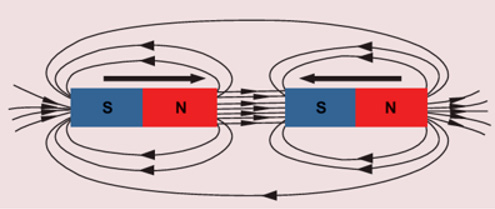
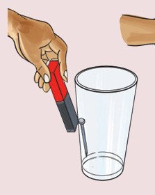
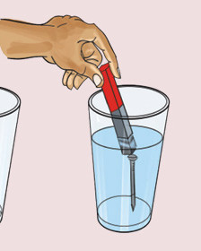

4. By using a specialized application or other application, draw the pattern you have observed and compare it with the one shown in Figure 6.

Results: Write the results of the experiment you have conducted.
Conclusion: Write the conclusion of the experiment you have conducted.
Activity 5: Investigating the penetration of magnetic force through matter
Materials: Water, two empty glasses, two nails and a bar magnet
Procedure
- 1. Put one nail in one empty glass.
- 2. Pour some water into the second glass.
- 3. Put the second nail in the glass containing the water as shown in Figure 7.
- 4. Dip the magnet slowly in the glass containing the water near the nail. What do you observe?
- 5. Pass the magnet on the surface of the empty glass, near the nail. What do you observe?


Figure 7: The penetration of magnetic force in matter
The magnet attracted the nail through the empty glass. Observe Figure 7(a).
Similarly, magnetic force penetrated into the water and pulled the nail in